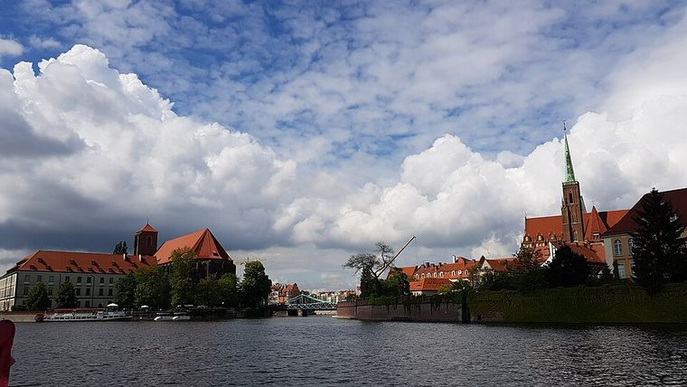

Polska — wszystkie działy
237 opracowań
WielkopolskieV

Wielkopolskie28.11.2026, 14:53
Nad ranem strażacy z powiatu kościańskiego interweniowali w związku z dwoma pożarami. Dzieliła je zaledwie godzina. Do pierwszego pożaru doszło o 3:48 w Czempiniu przy ul. Krańcowej.
Kluczowe parametry
Liczba źródeł2 redakcje
Kategoria/Polska/Regiony/Wielkopolskie
Główne źródłoTVP3 Poznań
Warmińsko-MazurskieV

Warmińsko-Mazurskie28.11.2026, 14:53
Przed Szpitalem Powiatowym im. Jana Pawła II w Bartoszycach zgromadzili się protestujący. Powodem jest decyzja, która wzbudziła niepokój wśród mieszkańców powiatu i okolicznych miejscowości.
1 redakcja/Polska/Regiony/Warminsko-Mazurskie
ZachodniopomorskieV

Zachodniopomorskie28.11.2026, 14:53
Telewizja Polska zaprasza na premierę filmu dokumentalnego „Wolne Sądy” oraz towarzyszącą mu debatę z udziałem wybitnych przedstawicieli europejskiego życia publicznego.
1 redakcja/Polska/Regiony/Zachodniopomorskie
DolnośląskieV

Dolnośląskie28.11.2026, 14:53
Żółte kartki: Kolan (Zagłębie) 46' Rozpoczęła się druga połowa. Zeszli Dąbrowski, Kolan i Kerk.
2 redakcje/Polska/Regiony/Dolnoslaskie
LubelskieV

Lubelskie28.11.2026, 14:53
Wisła Kraków będzie chciała podtrzymać znakomitą serię spotkań na własnym stadionie. W sobotę „Biała Gwiazda” podejmie Motor Lublin, a trener Mariusz Jop podkreśla, że celem jest obrona „twierdzy Kraków” i…
2 redakcje/Polska/Regiony/Lubelskie
PolskaV

Polska28.11.2026, 14:53
Białoruś zaproponowała Polsce przeprowadzenie konsultacji dotyczących wpływu zapory granicznej na Puszczę Białowieską.
2 redakcje/Polska
PolitykaV

Polityka28.11.2026, 14:53
Rządząca koalicja nie zamierza się poddać – rzecznik rządu Adam Szłapka zapowiedział na antenie Polsat News próbę odrzucenia prezydenckiego weta do ustawy podatkowej.
2 redakcje/Polska/Polityka
Podkarpackie28.11.2026, 14:53
Targi rzemiosła WZORY trwają od soboty do niedzieli (28–29 listopada) w hali Podpromie w Rzeszowie.
2 redakcje/Polska/Regiony/Podkarpackie
PomorskieV

Pomorskie28.11.2026, 14:53
W sobotę około godziny 7 służby ratunkowe otrzymały zgłoszenie o pożarze domku letniskowego w miejscowości Lutom w gminie Czersk (województwo pomorskie).
3 redakcje/Polska/Regiony/Pomorskie
Warmińsko-MazurskieV

Warmińsko-Mazurskie28.11.2026, 14:01
Łatwiejszy ma być dojazd do pracy, szkoły i szpitala. Mieszkańców miejscowości położonych wokół Olsztyna mogą czekać istotne zmiany w komunikacji publicznej.
1 redakcja/Polska/Regiony/Warminsko-Mazurskie
PomorskieV

Pomorskie28.11.2026, 14:01
Policjanci z Sopotu zatrzymali dwóch mężczyzn podejrzewanych o kradzież czterech kegów po piwie z zaplecza jednego z lokali.
1 redakcja/Polska/Regiony/Pomorskie
ZachodniopomorskieV

Zachodniopomorskie28.11.2026, 14:01
Warsztaty kreatywne, zajęcia muzyczne i ruchowe a przede wszystkim eksperckie panele dla rodziców. Miejski Ośrodek Kultury w Policach świętował Światowy Dzień Wcześniaka.
1 redakcja/Polska/Regiony/Zachodniopomorskie
LubelskieV

Lubelskie28.11.2026, 14:01
Do wypadku doszło w sobotę, 28 listopada, około godz. 13:30 na 613. kilometrze DK92. W zdarzeniu uczestniczyły dwa samochody osobowe. Według przekazanych informacji jedna osoba została ranna.
2 redakcje/Polska/Regiony/Lubelskie
Wyświetlono 13 z 237 opracowań · przewiń w dół, aby wczytać kolejne